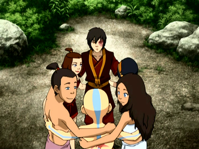

Commentary/Process - Members, Goal, Process, Decisions, and Suggestions

Jayna Rowe - Group leader, Images, Episode Descriptions, HTML, XML Markup
Rowyn Hope - CSS, Formatting, XML Markup, XML Schema, HTML
Shannon Dunn - Group Mentor, XML Markup, Suggestions
The Avatar Project is a one semester project that involved our team creating a website based on the Nickelodeon hit TV series, “Avatar: The Last Air Bender.” We chose to focus on a timelines of the redemption arc of Prince Zuko. This would include pivotal moments outlined by the official Avatar Youtube channel presented in a quick and easy overview of the entire series. Images, descriptions, and the transcript all contribute towards how Zuko progressed throughout the show.
We began by sourcing the transcripts from avatar.fandom.com, which involved XML markup, schema creation, and looking ahead towards how we would use those transcripts. We ran the completed XML markup collections through XSLT to quickly convert the markup into HTML files for each book. These HTML files categorized the transcripts for Water, Earth, and Fire with CSS to match each design language for each of the seasons. HTML/CSS timelines served as a launching point to each section of the transcripts. Additionally, the timelines offer the user a quick and simple way to view Zuko's growth over time. A server side include (SSI) provided navigation between every section of the website at the top of the page. We chose to focus on one character due to the impressive size and scope of the world of Avatar. We may explore other characters, locations, or concepts in the future.
We suggest spending plenty of time insuring the backbone of the site, XML markup and schema, are free from errors and allow flexibility with the HTML, CSS, and other languages you plan on incorporating. Organizing your folder structure, workflow, and overall organization of your page leads to a smoother, more efficient experience for your team.